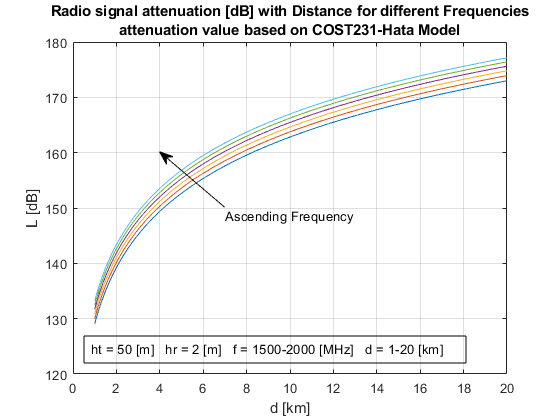
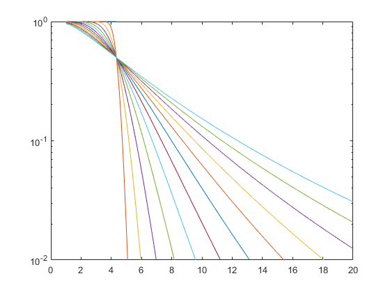

Contents
Section 1: COST MODEL Evaluation with distance and frequency
This part of the script returns signal attenuation parameterized with distance and frequency based on COST231-Hata Model
Authors: Enrique Caballero, Karol xxx
LHatadB = Losscost231hata(hBS, hMS, f, d, area)
LHatadB - radio signal attenuation [dB]
ht - physical height of the transmitting base station [m]
30 <= ht <= 200 m
hr - physical height of the receiving device [m]
1 <= hr <= 10 m
f - frequency [MHz]
1500 <= f <= 2000 MHz
d - distance between antennas [km]
1 <= d <= 20 kmclear all; close all; clc; dBm = @(mW) 10*log10(mW); % dBm As A Function Of Power In milliWatts dBW = @(W) 10*log10(W); % dBW As A Function Of Power In Watts % ht - effective base station antenna height [m] % 30 <= ht <= 200 m ht = 50; %[m] % hr - mobile station antenna height [m] % 1 <= hr <= 10 m hr = 2; %[m] % f - frequency [MHz] % 1500 <= f <= 2000 MHz max_f = 2000; min_f = 1500; precision_f = 100; f = min_f:precision_f:max_f; % d - distance between antennas [km] % 1 <= d <= 20 km min_distance = 1; max_distance = 20; precision = 0.01; d = min_distance:precision:max_distance; fig = figure(); for i = 1:length(f) % Loss Cost Function L(:,i) = Losscost231hata(ht, hr, f(i), d); clf reset; plot(d, L,'-'); description = ['ht = ',num2str(ht),' [m] hr = ',num2str(hr),' [m] f = ',... num2str(min_f),'-',num2str(max_f),' [MHz] d = ',num2str(min_distance),'-',num2str(max_distance),' [km] ']; annotation('textbox',[0.15 0.0 0.2 0.2],'String',{description},'FitBoxToText','on'); grid on; axis auto; title({'Radio signal attenuation [dB] with Distance for different Frequencies';... 'attenuation value based on COST231-Hata Model'}); xlabel('d [km]'); ylabel('L [dB]'); hold on end x1 = [7 4]; y1 = [150 160]; [normx, normy] = coord2norm(fig.CurrentAxes, x1,y1); annotation('textarrow', normx, normy,'String','Ascending Frequency');
Section a): TECHNOLOGY SELECTION
Proposal: 4G LTE B3 1800 MHz from FDD LTE Frequency Bands used in Austria https://www.rtr.at/TKP/was_wir_tun/telekommunikation/spectrum/framework/FRQshare.en.html This frequency band is given to deploy 4G LTE networks https://halberdbastion.com/technology/cellular/4g-lte/lte-frequency-bands/b3-1800-mhz Market Share of B3 1800 MHz https://www.spectrummonitoring.com/frequencies.php/frequencies.php?market=AUT
We could also use 5G version of the band 3 (n3)
We are going to address a downlink (base station to user) from: https://www.ntia.doc.gov/files/ntia/meetings/lte_technical_characteristics.pdf Base Station: Power (EIRP) (dBm)/antenna -> 61 Emission Bandwith: 5 MHz Mobile User: Reference Sensitivity (dBm) for Wide Area: -92.2
EIRP_basestation = 61; % [dBm] bear in mind it is per antenna, we will assume one antenna Sensitivity_user = 92.2; % [dBm] max_pathloss = -Sensitivity_user - EIRP_basestation; f_FDD = 1800; % [MHz] Loss_FDD = Losscost231hata(ht, hr, f_FDD, d); E_N = EIRP_basestation - Loss_FDD; % Special_case no shadowing gain = -max_pathloss - Loss_FDD; % Look for first negative value k = find(gain <=0); fprintf('Maximum distance without shadow fading is %0.02f km',d(k(1)))
Maximum distance without shadow fading is 4.34 km
Fast Fading Way 1: Complementary error function
shadow_fading_parameter = 0:1:12 ; % [dB] needs to be parameterized shadow_fading_power = -Sensitivity_user - E_N; figure() for i = 1:size(shadow_fading_parameter,2) shadowing = 0.5 * erfc(shadow_fading_power/(sqrt(2)*shadow_fading_parameter(i))); semilogy(d,shadowing) hold on end ylim([1e-2 1e0])
Probability distribution Way 2: Gaussian Distribution
To be implemented
mu = 0; sigma = 12 * rand; % [dB] first random, then it needs to be parameterized gaussian_distribution = makedist('Lognormal','mu',mu,'sigma',sigma);